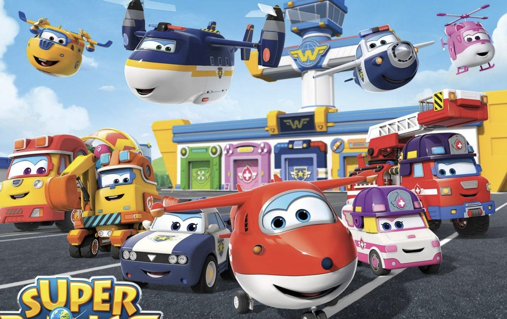

Harika Kanatlar
Harika Kanatlar, 2010'lu yılların ortasında yayınlanan popüler bir çocuk çizgi filmidir. Çizgi film, dünya genelinde farklı ülkelere seyahat eden ve çeşitli maceralar yaşayan sevimli uçak karakterlerini konu alır. Ana karakterler arasında Jett, Dizzy, Donnie ve diğer çeşitli uçaklar bulunur.
Farklı kültürlerin ve insanların tanıtıldığı bu eğitici çizgi film, çocuklara dünya hakkında bilgi edinme fırsatı sunar.